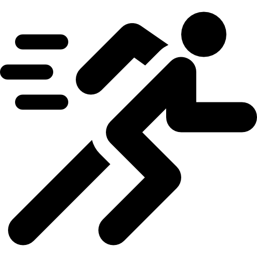

Hello.
I'm a Junior Web Developer and also an English Teacher. I love to build websites and I'm a both computer and car lover.
My Skills.
Development & Programming
Since I was a little child, I was always interested in computers and I still am. I used to play a lot of video games and I thought it was cool.
So now, I believe my passion to computers evolved into programming and here I am !
Languages
I am a native speaker in Turkish and C1 level of English speaker. Also, I can speak a little bit of German. Hallo mein Freund!
My Hobbies.

Aside from being a computer geek in terms of programming, I am also a gamer!
The first time I met computers goes back to my childhood. My father was playing video games and I only watched him at that time, because I was afraid to play video games.
After playing games for years, I thought this has to be stop and I should do more serious stuff with computers. This is the idea behind the programming love of mine.

Sports Should Done by Everyone!
Actually I like all kind of sports. But air sports is my favourite If you ask me. Especially us programmers should do exercised regularly If they don't want a back pain everyday.

A room without books is like a body without a soul.
Reading books clears and calms my soul. There are times in our lives when we feel overwhelmed and stress. At those times, books are my biggest treatment.
Maybe we can go for a ride one day?

Wouldn't it be awesome if I just code in my car in a rainy day! Being calm as a lemon and having two things that you love together which are car and programming.
I guess that's just a fantasy.